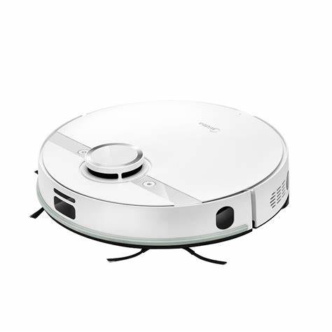
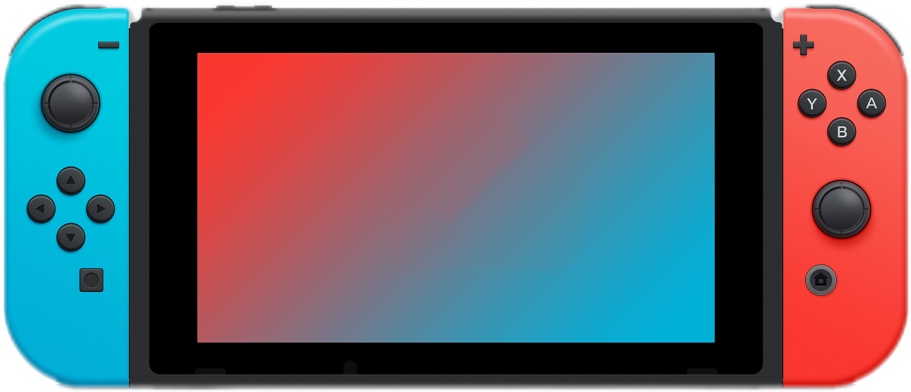

<!DOCTYPE html><!-- 定义文档类型为HTML5 -->
<html>
  <head>
    <title>My experiment</title><!-- 网页标题 -->
     <!-- 引入jsPsych库及其插件 -->
    <script src="jspsych7.3.4.js"></script>
    <!-- ...其他插件脚本 -->
    <script src="htmlKeyboardResponse.js"></script>
    <script src="imageSliderResponse.js"></script>
    <script src="fullscreen.js"></script>
    <script src="SurveyHtmlForm.js"></script>
    <script src="preload.js"></script>
    <script src="surveyLikert.js"></script>
    <script src="htmlButtonResponse.js"></script>
    <script src="instructions.js"></script>
    <!-- 引入jsPsych的样式表 -->
    <link href="jspsych.css" rel="stylesheet" type="text/css" />
    <!-- 引入自定义样式表 -->
    <link href="style.css" rel="stylesheet" type="text/css" />
  </head>
  <body></body>
  <script>
     // 初始化jsPsych并设置全局参数
    const jsPsych = initJsPsych({
      use_webaudio: true,
      on_finish: function () {
        // 实验结束时调用的回调函数
          const allData = jsPsych.data.get().csv();
          // 保存数据到CSV文件
        saveTextToFile(allData,'实验结果.csv');
        },
    });
    // 保存数据到文件的函数
    function saveTextToFile(textstr, filename,type='text/csv') {
      // 创建Blob对象并转换为URL
      const blobToSave = new Blob([textstr], {
            type: type,
        });
        let blobURL = "";
        if (typeof window.webkitURL !== "undefined") {
            blobURL = window.webkitURL.createObjectURL(blobToSave);
        }
        else {
            blobURL = window.URL.createObjectURL(blobToSave);
        }
        // 创建下载链接并触发点击事件
        const link = document.createElement("a");
        link.id = "jspsych-download-as-text-link";
        link.style.display = "none";
        link.download = filename;
        link.href = blobURL;
        link.click();
    }
    // 将JSON数据转换为CSV格式的函数
    function JSON2CSV(objArray) {
        const array = typeof objArray != "object" ? JSON.parse(objArray) : objArray;
        let line = "";
        let result = "";
        result += "\uFEFF";
        const columns = [];
        for (const row of array) {
            for (const key in row) {
                let keyString = key + "";
                keyString = '"' + keyString.replace(/"/g, '""') + '",';
                if (!columns.includes(key)) {
                    columns.push(key);
                    line += keyString;
                }
            }
        }
        line = line.slice(0, -1); // removes last comma
        result += line + "\r\n";
        for (const row of array) {
            line = "";
            for (const col of columns) {
                let value = typeof row[col] === "undefined" ? "" : row[col];
                if (typeof value == "object") {
                    value = JSON.stringify(value);
                }
                const valueString = value + "";
                line += '"' + valueString.replace(/"/g, '""') + '",';
            }
            line = line.slice(0, -1);
            result += line + "\r\n";
        }
        return result;
    }
      // 数据收集类
    class DataCollection {
        constructor(data = []) {
            this.trials = data;
        }
        // 将数据转换为CSV格式
        csv() {
            return JSON2CSV(this.trials);
        }
        // 将数据转换为JSON格式，可选择是否美化格式

        json(pretty = false) {
            if (pretty) {
                return JSON.stringify(this.trials, null, "\t");
            }
            return JSON.stringify(this.trials);
        }
         // 将数据保存到本地文件
        localSave(format, filename) {
            format = format.toLowerCase();
            let data_string;
            if (format === "json") {
                data_string = this.json();
            }
            else if (format === "csv") {
                data_string = this.csv();
            }
            else {
                throw new Error('Invalid format specified for localSave. Must be "json" or "csv".');
            }
            saveTextToFile(data_string, filename,'text/csv');
        }}
    let timeline = [];// 实验流程的时间轴数组
    let preload = {   // 预加载插件配置
      type: jsPsychPreload,
      auto_preload: true,
      paths: ['image/virtual_inf1.jpg'] // 预加载的图片资源路径
    };
    //欢迎语
    let welcome = {
      type: jsPsychFullscreen,
      fullscreen_mode: true,
      message: `
      <h4 style="margin-bottom:10px">您好！非常感谢本此问卷调查是为了学术研究而进行的，因此您的回答对于本研究至关重要。<br></br>
      同时，本研究保证您所填写的信息将会被严格保密，所有题目都没有标准答案，只是想了解您的真实想法。<br></br>您的真实想法对我们非常重要，
      感谢您的合作与配合！<br></br></h4>
`     ,
      button_label:["开始"],
    }

    //收集被试信息
    var participantInfo = {
      type:jsPsychSurveyHtmlForm,
      preamble:'<h1 style="margin-bottom:50px"> 请输入您的个人信息 </h1>',
      html:`
      <div style="max-width: 400px; margin: 0 auto;font-size:24px">

      <div style="display: flex; align-items: center; margin-bottom: 25px;">
      <div style="width: 80px; text-align: right;">年龄:</div>
      <input name="name" type="text" placeholder="请填写年龄" style="flex: 1; font-size:24px; margin-left: 10px; padding: 5px; border: 1px solid #ccc;" required>
      </div>

      <div style="display: flex; align-items: center; margin-bottom: 25px;">
      <label for="sex" style="width: 80px; text-align: right;">性别:</label>
      <select id=sex" name="sex" style="flex: 1; font-size:24px; margin-left: 10px; padding: 5px; border: 1px solid #ccc;">
        <option value="" disabled selected hidden>请选择性别</option>
        <option value="0">男</option>
        <option value="1">女</option>
      </select>
      </div>

      </div>
      `
    }
    // 实验任务配置，使用Likert量表
    let trail1 = {
      type: jsPsychSurveyLikert,
      preamble: function (){
        // 任务前的指导语
        let text =
                `
                <div class="guidance-text">
                虚拟代言人是由计算机生成图像技术制作而成的，它们与人类长相相似。<br>在品牌或产品的相关广告传播中，向消费者传达产品的相关信息。
                </div>`
        return text
      },
      questions: [
        //问题列表
        {
          prompt: `
          <div class="image-prompt"></div>
          
          </div>
           <div class="question">
            你认为这个代言人在多大程度上像真人
          </div>
           `,
          name: '拟人化',
          labels: ["非常不像", "2", "3", "4","5","6", "非常像"],
          required: true
        },
        {
          prompt: `
          <div class="question">
            你对该代言人的熟悉程度是多少
          </div>
           `,
          name: '熟悉度',
          labels: ["非常不熟悉", "2", "3", "4", "5", "6", "非常熟悉"],
          required: true,
        },{
          prompt: `
          <div class="question">
            能动性指的是思考和行动的能力，包括自我控制、道德、记忆、情绪识别、规划、交流和思考。<br>你认为该代言人在多大程度上具有能动性
          </div>
           `,
          name: '能动性',
          labels: ["能动性非常低", "2", "3", "4", "5", "6", "能动性非常高"],
          required: true,
        },{
          prompt: `
          <div class="question">
            感受性指的是感受和体验的能力，包括饥饿、恐惧、疼痛、愉悦、愤怒、人格、欲望、意识、自尊、尴尬和开心。<br>你认为该代言人在多大程度上具有感受性
          </div>
           `,
          name: '感受性',
          labels: ["感受性非常低", "2", "3", "4", "5", "6", "感受性非常高"],
          required: true,
        },

      ],

      button_label: '下一题',
      on_finish: function(data) {// 每题结束后的回调函数
        }

    };
    let trail2 = {
      type: jsPsychSurveyLikert,
      questions: [
        {
          prompt: `
          <div class="image-prompt"></div>
          
          </div>
           <div class="question">
            <div style="font-weight:bold">你认为图中的产品（扫地机器人）是享乐的还是功利的?</div><br>（享乐产品注重于给消费者以舒适感受和愉悦体验，让消费者在使用过程中感受到快乐和放松，是以快乐为导向的。<br>功利产品更注重实用性和功能性，强调产品的功效和实际效果，它们与帮助消费者实现目标或完成任务有关。<br>例：扫描仪-功利产品，蛋糕-享乐产品）
          </div>
           `,
          name: '功利享乐',
          labels: ["功利性", "2", "3", "4","5","6", "享乐性"],
          required: true
        },
        {
          prompt: `
          <div class="flex_container">
            
            
            </div>
          <div class="question">
            <div style="font-style:normal;font-weight:bold">请结合你的自身情况，回答以下问题：</div><br>我认为该虚拟影响者是扫地机器人的相关推广者。
          </div>
           `,
          name: '匹配性1',
          labels: ["非常不符合", "2", "3", "4", "5", "6", "非常符合"],
          required: true,
        },{
          prompt: `
          <div class="question">
          该虚拟影响者和扫地机器人之间存在逻辑联系。
            </div>
           `,
          name: '匹配性2',
          labels: ["非常不符合", "2", "3", "4", "5", "6", "非常符合"],
          required: true,
        },{
          prompt: `
          <div class="question">
            对我来说，该虚拟影响者是扫地机器人的推广者是有道理的。
            </div>
           `,
          name: '匹配性3',
          labels: ["非常不符合", "2", "3", "4", "5", "6", "非常符合"],
          required: true,
        },

      ],
      button_label: '下一题',
      on_finish: function(data) {

        }

    };
    let trail3 = {
      type: jsPsychSurveyLikert,
      questions: [
        {
          prompt: `
          <div class="image-prompt"></div>
          
          </div>
           <div class="question">
            <div style="font-weight:bold">你认为图中的产品（游戏机）是享乐的还是功利的?</div><br>（享乐产品注重于给消费者以舒适感受和愉悦体验，让消费者在使用过程中感受到快乐和放松，是以快乐为导向的。<br>功利产品更注重实用性和功能性，强调产品的功效和实际效果，它们与帮助消费者实现目标或完成任务有关。<br>例：扫描仪-功利产品，蛋糕-享乐产品）
          </div>
           `,
          name: '功利享乐',
          labels: ["功利性", "2", "3", "4","5","6", "享乐性"],
          required: true
        },
        {
          prompt: `
          <div class="flex_container">
            
            
            </div>
          <div class="question">
            <div style="font-style:normal;font-weight:bold">请结合你的自身情况，回答以下问题：</div><br>我认为该虚拟影响者是游戏机的相关推广者。
          </div>
           `,
          name: '匹配性1',
          labels: ["非常不符合", "2", "3", "4", "5", "6", "非常符合"],
          required: true,
        },{
          prompt: `
          <div class="question">
          该虚拟影响者和游戏机之间存在逻辑联系。
            </div>
           `,
          name: '匹配性2',
          labels: ["非常不符合", "2", "3", "4", "5", "6", "非常符合"],
          required: true,
        },{
          prompt: `
          <div class="question">
            对我来说，该虚拟影响者是游戏机的推广者是有道理的。
            </div>
           `,
          name: '匹配性3',
          labels: ["非常不符合", "2", "3", "4", "5", "6", "非常符合"],
          required: true,
        },

      ],
      button_label: '下一题',
      on_finish: function(data) {

        }

    };
    //实验结束界面
    let finish = {
      type:jsPsychHtmlButtonResponse,
      stimulus:function(){
        let tempHtml = `
        <h2>实验结束，感谢您的耐心作答！</h2>`
        return tempHtml
      },
      choices:['结束'],
    }
    //退出全屏模式的配置
    var exit_fullscreen = {
      type: jsPsychFullscreen,
      fullscreen_mode: false
    }

    //将各实验环节添加进时间轴中
    timeline.push(welcome);
    timeline.push(participantInfo);
    timeline.push(trail1);
    timeline.push(trail2);
    timeline.push(trail3);
    timeline.push(finish);
    timeline.push(exit_fullscreen);
    jsPsych.run(timeline);//启动实验

  </script>
</html>
